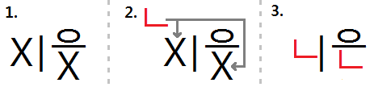

Introduction
As a beginner learning Korean, you should focus on learning the sounds that Korean letters make, and how they fit together to make syllables. I teach this in Lesson 1, 2 and 3 of Unit 0.
You might also be wondering what the name of each Korean letter is. That is, how to refer to a specific letter of the Korean alphabet. For example, in English, we refer to different letters of the alphabet by giving them the following “names:”
A = “EH”
B = “BEE”
C = “SEE”
D = “DEE”
E = “EEE”
F = “EF”
G = “JI”
Etc..
Each Korean letter has its own name, just like how each English letter has its own name. The difference is – to my knowledge – there is no official way to write the names of the English letters. Is “EH” the best way to write the name for the letter “A?” Well, I’m Canadian, so it seems correct to me.
Korean letters do have official names. I will introduce these names to you in this lesson.
I must point out that this is not very important for a beginner to learn. In fact, it is not even very important for an advanced learner to learn. If you are just learning how to read and write Korean, I highly suggest that you focus on the sounds that each letter makes instead of learning their names. By no means do you need to understand this lesson before you move on to Unit 1: Lesson 1. It would be more appropriate for you to come back when you reach Unit 4 or 5.
In English, if you say a word (for example, your last name) and need to spell it out, it is very common to spell out your name letter-by-letter. In Korean, as the pronunciation of letters is more fixed, it is more common to instead spell out a word syllable-by-syllable instead of letter-by-letter. For example, when my wife says her name over the phone, she would very slowly say “이 – 슬 – 기,” instead of saying the individual letters that make up the syllables.
That being said, let’s get started.
Names of Korean Letters
Korean Consonants
In Unit 0: Lesson 1, I present the order of the Korean alphabet. Here is the list of consonants that was presented:
ㄱ ㄲ ㄴ ㄷ ㄸ ㄹ ㅁ ㅂ ㅃ ㅅ ㅆ ㅇ ㅈ ㅉ ㅊ ㅋ ㅌ ㅍ ㅎ
If we take out the “double letters” (ㄲ, ㄸ, ㅃ, ㅆ and ㅉ), we are left with:
ㄱ ㄴ ㄷ ㄹ ㅁ ㅂ ㅅ ㅇ ㅈ ㅊ ㅋ ㅌ ㅍ ㅎ
The name of each letter (in the same order as above) is:
ㄱ: 기역
ㄴ: 니은
ㄷ: 디귿
ㄹ: 리을
ㅁ: 미음
ㅂ: 비읍
ㅅ: 시옷
ㅇ: 이응
ㅈ: 지읒
ㅊ: 치읓
ㅋ: 키읔
ㅌ: 티읕
ㅍ: 피읖
ㅎ: 히읗
Except for the letters ㄱ, ㄷ and ㅅ, all of the letters follow a specific pattern. Look at the following picture to see how the pattern works:

Step 1: This structure is always (except for the three exceptions) used as the base.
Step 2: Whichever letter you are naming (in our example, the letter ㄴ) gets put in place of “X” in our diagram.
Step 3: This is the name of the letter.
The letters ㄱ, ㄷ and ㅅ do not follow this pattern.
As you learned in Unit 0: Lesson 2, the pronunciation of ㄱ and ㅋ, and ㄷ and ㅌ are similar.
This often causes confusion for people – including Koreans! Korean people often assume that the name of ㅋ and ㅌ are respectively:
ㅋ: 키옄
ㅌ: 티긑
(ㅅ doesn’t have a similar sounding consonant like this, so there is no confusion here)
Notice that the letters above follow our regular pattern, and that their correct names are:
ㅋ: 키읔
ㅌ: 티읕
Korean Double Consonants
In the section above, you learned the names of the basic Korean consonants. I purposely omitted the explanation of the following double consonants:
ㄲ
ㄸ
ㅃ
ㅆ
ㅉ
The word for “pair” or “double” in Korean is 쌍 (from the Hanja character 雙). The name of each of the letters above is the name as their respective single-letter names, but with “쌍” said before it. For example:
ㄲ: 쌍기역
ㄸ: 쌍디귿
ㅃ: 쌍비읍
ㅆ: 쌍시옷
ㅉ: 쌍지읒
Korean Vowels
Korean vowels don’t really have “names.” The “name” of a Korean vowel is the same as each vowel’s respective pronunciation with the silent consonant ㅇ used before it.
If you listen to the pronunciation of each, that would be the “name” that it would be referred to. It is very rare to have to refer to one of these vowels by its name.
Again, it is rare to refer to these vowels by name. However, it is common to distinguish between vowels that sound similar by breaking them into their respective components. The most common case of this is when distinguishing between ㅐ and ㅔ. For example, if somebody said their name was “헤진” and you had to write it down, you wouldn’t know to write down “해진,” “헤진” or “혜진.” In this case, it would be necessary for you to distinguish between ㅐ, ㅔ and 예. Again, you can do this by breaking the vowel into its component vowels.
For example:
To refer to ㅐ, you can say “아이.”
To refer to ㅔ, you can say “어이.”
To refer to ㅖ, you can say “여이.”
ㅖ is notably different, but when preceded by a consonant sometimes the pronunciation is slurred to sound similar to ㅐ or ㅔ.
I purposely didn’t include ㅒ (which would also sound similar), but this vowel is much less common and the name “햬진” doesn’t exist. However, 해진, 헤진 and 혜진 are all possible.
The similarity in pronunciation of ㅐ and ㅔ often causes confusion, even for native Korean speakers. There are many words whose spelling is exactly the same except for a difference in ㅐ or ㅔ. For example:
When writing these words, they might tell themselves “Ah, I can’t remember if it is 아이 or 어이.”
Besides distinguishing ㅐ and ㅔ (and sometimes ㅖ), it is rare to have to spell out the component parts of a different vowel.
Click here to go back to the Unit 0 main page.